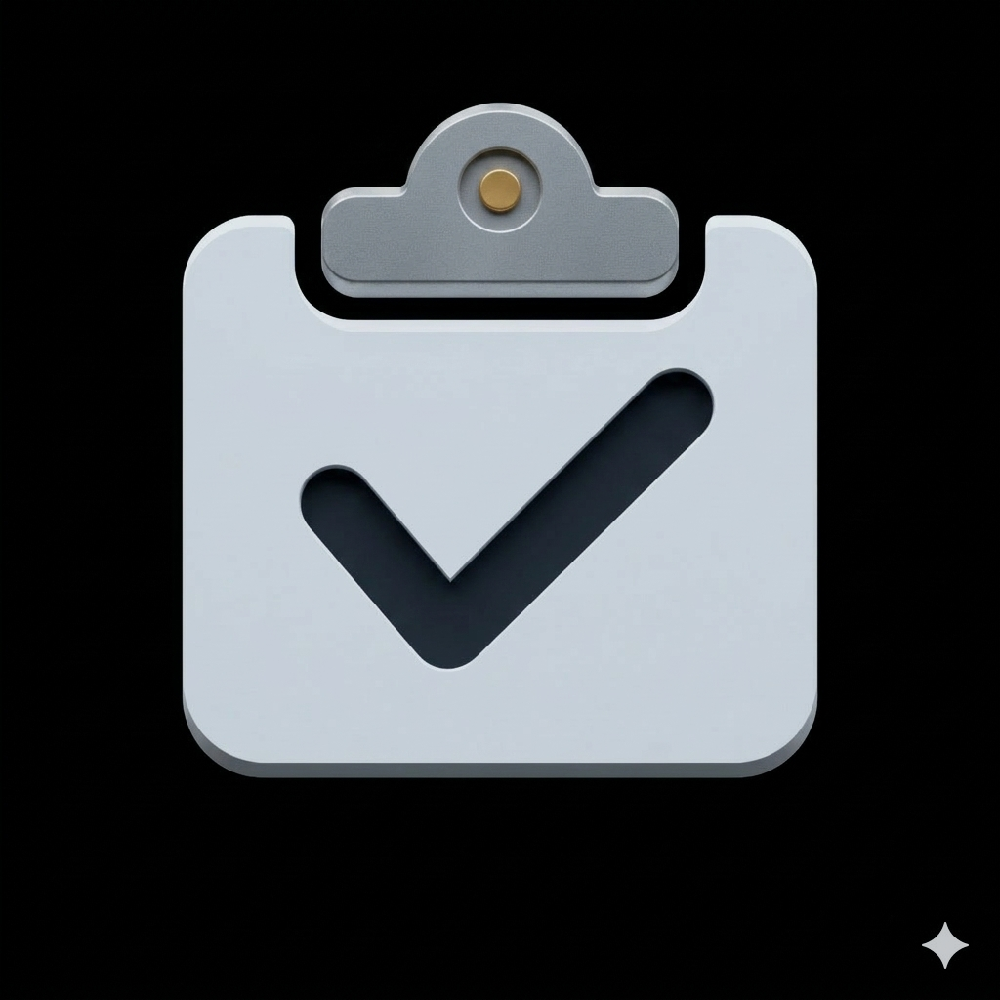

Snaglite User Manual
Snaglite is an iPhone app for live site inspections. It helps you record, organise, track and report construction defects, or ‘snags’, during inspections.


Snaglite workflow:
- Create a site
- Add units
- Add locations
- Create snags with photos, notes, status and assignee
- Review and update snag information
- Export PDF reports
You can also use attachments, backups, settings, subscriptions and Home Screen shortcuts where available.
How Snaglite is organised
Snaglite uses a simple hierarchy:
Site → Unit → Location → Snag
- Site means the overall development, scheme or property
- Unit means an individual plot, apartment, house, block or inspection area
- Location means a room, space or sub-area within the unit
- Snag means an individual defect or issue record
Manual contents
Before you start
- Enter your company details and add your logo in Settings
- Add any regular assignees you want to use
- Test PDF export on your device
- Use backup regularly if your inspection data is important